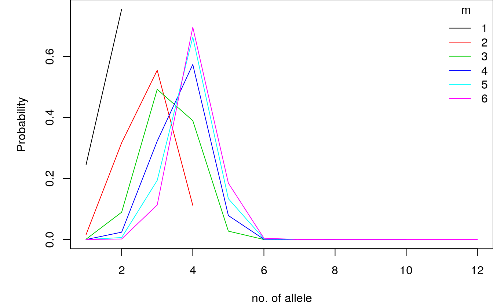
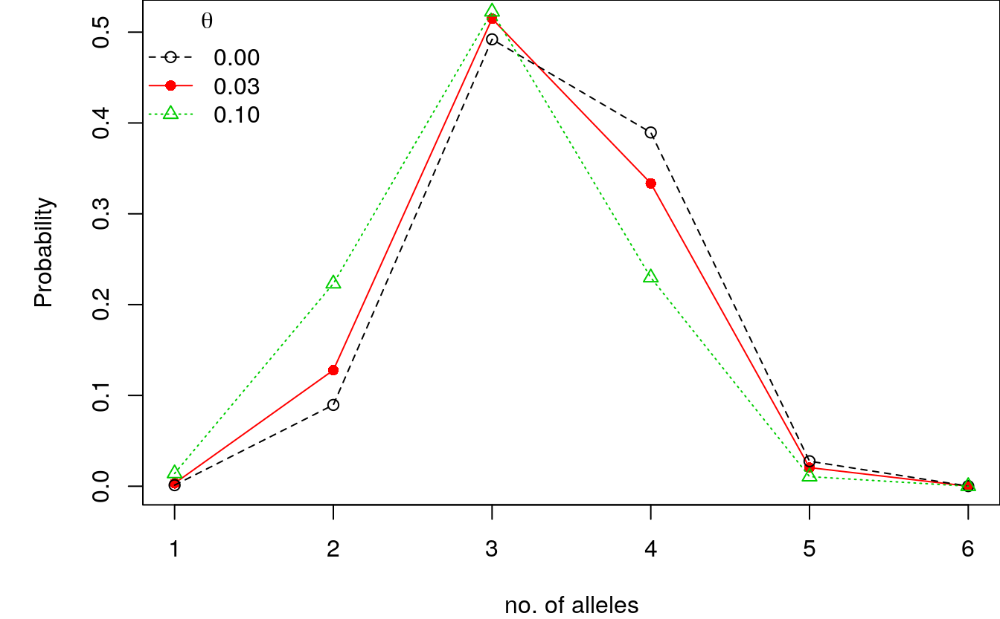
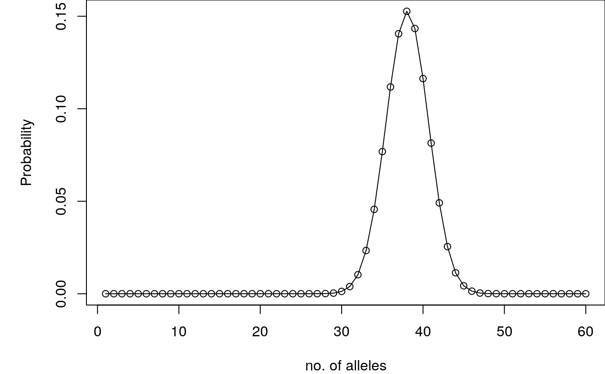
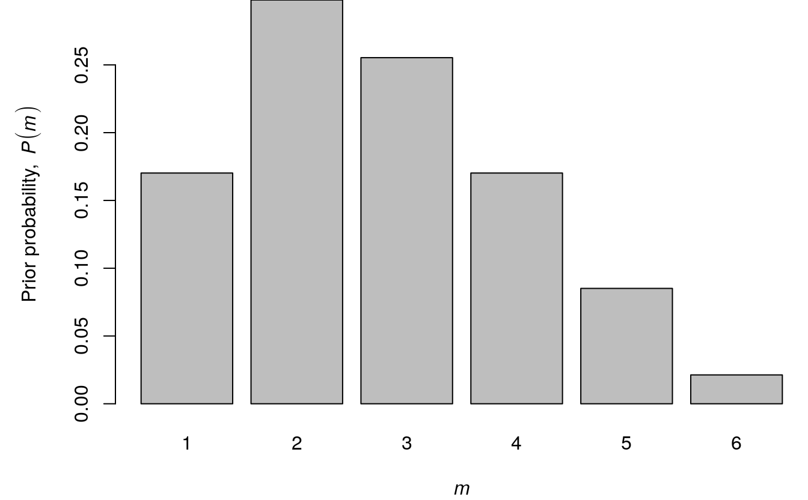

number-of-alleles.RmdWhen more than one individual contributes biological material to a forensic stain, the resulting DNA type is termed a DNA mixture. DNA mixtures occur frequently in forensic genetic casework, and in recent years much research has been devoted to this subject.
This vignette shows how to compute the exact distribution of the number of alleles for any number of profiles and investigated loci using the DNAtools package in R.
library(DNAtools)
Vedhæfter pakke: 'DNAtools'
Det følgende objekt er maskeret fra 'package:stats':
convolveThe per locus number of observed alleles is of interest as it indicates the plausible range of the number of contributors. If a DNA mixture has \(m\) contributors, it is possible to observe anything between \(1\) and \(2m\) alleles at a given marker. Of particular interest is the probability at which an \(m+1\) person DNA mixture is percieved as an \(m\) person DNA mixture. That is, what is the probability that \(m\) persons have at most \(2(m-1)\) distinct alleles among them?
In forensic genetics, a DNA mixture refers to the situation where more than one individual’s DNA is present in an analysed trace. DNA mixtures are regularly encountered in forensic genetics.
However, an exact expression of the number of alleles has not been presented up to now. We show how to derive the probability that \(N\) alleles are observed given \(m\) contributors and \(L\) typed loci.
The prevailing technology for identity assessment and DNA mixture analysis in forensic genetics uses so-called Short Tandem Repeat (STR) markers or loci. The number of alleles observed at these markers are typically in the range of 10 to 30 alleles.
In the DNAtools there is a database with \(1,000\) simulated DNA profiles on 10 autosomal STR markers, which we will use to compute the allele frequencies.
| D16S539.1 | D16S539.2 | D18S51.1 | D18S51.2 | D19S433.1 | D19S433.2 |
|---|---|---|---|---|---|
| 11 | 11 | 15 | 21 | 14 | 14 |
| 13 | 12 | 15 | 14 | 16 | 16 |
| 9 | 9 | 13 | 17 | 14 | 14 |
| 11 | 12 | 14 | 15 | 15 | 13 |
| 12 | 12 | 17 | 12 | 15.2 | 13 |
| 9 | 13 | 17 | 14 | 13 | 14 |
We extract the relevant columns and compute the allele frequencies by the allele count and total number of alleles in the data.
allele_freqs <- lapply(1:10, function(x){
table(c(dbExample[[x*2]], dbExample[[1+x*2]]))/(2*nrow(dbExample))
})
names(allele_freqs) <- sub("\\.1", "", names(dbExample)[(1:10)*2])
head(allele_freqs)
$D16S539
10 11 12 13 14 8 9
0.0195 0.2755 0.2860 0.2255 0.0020 0.0005 0.1910
$D18S51
11 12 13 14 15 16 16.2 17 18 19
0.0175 0.0955 0.0825 0.1705 0.1370 0.2390 0.0045 0.1535 0.0695 0.0035
20 21
0.0010 0.0260
$D19S433
11 12 12.2 13 13.2 14 14.2 15 15.2 16
0.0030 0.0540 0.0010 0.2015 0.0065 0.3895 0.0505 0.1740 0.0635 0.0555
16.2
0.0010
$D21S11
27 28 29 30 30.2 31 31.2 32 32.2 33.2
0.0280 0.3940 0.2195 0.1620 0.0465 0.0695 0.0230 0.0040 0.0415 0.0075
34.2
0.0045
$D2S1338
14 16 17 18 19 20 21 22 23 24
0.0005 0.0420 0.1235 0.1335 0.1350 0.0920 0.0690 0.0070 0.1675 0.1015
25 26
0.1260 0.0025
$D3S1358
11 14 15 16 17 18 19
0.0045 0.1365 0.3270 0.2675 0.1355 0.1150 0.0140 The total number of alleles observed for \(m\) contributors depends on the number of loci, \(L\), through the locus specific allele counts, \(N_l\), by \(N(m) = \sum_{l=1}^L N_l(m)\). Hence, we can focus on computing the distribution of \(N_l(m)\) below.
The number of alleles at locus \(l\), \(N_l(m)\), follows a distribution, where the number of alleles range from 1 (all \(m\) profiles homozygous with the same allele) to \(2m\) (all \(m\) profiles heterozygous sharing no allele). For each value that \(N_l(m)\) can attain there will typically be several ways \(m\) profiles can produce \(N_l(m)\) distinct alleles. For a given locus \(l\), we use the function Pnm_locus() to compute \(P(N_l(m) = n)\), for \(n = 1,\dots,2m\), where we need to specify \(m\) together with the allele frequencies.
m <- 3
P3_D16 <- Pnm_locus(m = m, theta = 0, alleleProbs = allele_freqs$D16S539)
setNames(P3_D16, 1:(2*m))
1 2 3 4 5 6
0.001164550 0.089551483 0.492098110 0.389529448 0.027534048 0.000122361 The theta argument refers to the \(\theta\) coefficient used to account for genetic dependence of alleles in the Balding-Nicholls population genetic model. Typical values ranges from \(0\) (independent alleles, no subpopulation structure) to \(0.03\) (mild correlation, some subpopulation structure).
We can also compute the probabilities for several \(m\). Here we let \(m\) range between 1 and 6 contributors.
ms <- 1:6
Ps_D16 <- matrix(NA, ncol = length(ms), nrow = max(ms)*2,
dimnames = list(alleles = 1:(max(ms)*2), noContrib=ms))
for(m in seq_along(ms)){
Ps_D16[1:(ms[m]*2),m] <- Pnm_locus(m = ms[m], theta = 0, alleleProbs = allele_freqs$D16S539)
}
knitr::kable(Ps_D16, row.names = TRUE)| 1 | 2 | 3 | 4 | 5 | 6 | |
|---|---|---|---|---|---|---|
| 1 | 0.245412 | 0.0163682 | 0.0011646 | 0.0000864 | 0.0000066 | 0.0000005 |
| 2 | 0.754588 | 0.3170886 | 0.0895515 | 0.0241752 | 0.0065797 | 0.0018244 |
| 3 | 0.5545736 | 0.4920981 | 0.3225956 | 0.1938807 | 0.1133775 | |
| 4 | 0.1119696 | 0.3895294 | 0.5736285 | 0.6633572 | 0.6956363 | |
| 5 | 0.0275340 | 0.0785909 | 0.1337656 | 0.1847718 | ||
| 6 | 0.0001224 | 0.0009221 | 0.0024039 | 0.0043736 | ||
| 7 | 0.0000013 | 0.0000062 | 0.0000157 | |||
| 8 | 0.0000000 | 0.0000000 | 0.0000000 | |||
| 9 | 0.0000000 | 0.0000000 | ||||
| 10 | 0.0000000 | 0.0000000 | ||||
| 11 | 0.0000000 | |||||
| 12 | 0.0000000 |
If we plot the outcome we see that for \(m \in \{4, 5, 6\}\) the most probable allele count is 4 indicating that D16S539 is not very polymorphic in this population.
par(mar = c(4,5,0,0))
plot(c(1,max(ms)*2), range(Ps_D16, na.rm = TRUE), type = "n",
xlab = "no. of allele", ylab = "Probability")
for(m in seq_along(ms)) lines(1:(2*ms[m]), Ps_D16[1:(ms[m]*2),m], col = m)
legend("topright", bty = "n", title = "m", legend = ms, col = seq_along(ms), lty = 1)
The probability of masking can be calculated from the table above. Hence, we need to compute \(P(N_l(m) \le 2(m-1))\), which is done below.
| 1 | 2 | 3 | 4 | 5 | 6 | |
|---|---|---|---|---|---|---|
| 1 | 0.245412 | 0.0163682 | 0.0011646 | 0.0000864 | 0.0000066 | 0.0000005 |
| 2 | 1.000000 | 0.3334568 | 0.0907160 | 0.0242616 | 0.0065863 | 0.0018249 |
| 3 | 0.8880304 | 0.5828141 | 0.3468572 | 0.2004671 | 0.1152024 | |
| 4 | 1.0000000 | 0.9723436 | 0.9204856 | 0.8638243 | 0.8108388 | |
| 5 | 0.9998776 | 0.9990765 | 0.9975899 | 0.9956106 | ||
| 6 | 1.0000000 | 0.9999987 | 0.9999938 | 0.9999843 | ||
| 7 | 1.0000000 | 1.0000000 | 1.0000000 | |||
| 8 | 1.0000000 | 1.0000000 | 1.0000000 | |||
| 9 | 1.0000000 | 1.0000000 | ||||
| 10 | 1.0000000 | 1.0000000 | ||||
| 11 | 1.0000000 | |||||
| 12 | 1.0000000 |
We see that the probability that an \(m\) person mixture is misconceived as an \(m-1\) person mixture is
Pm_D16 <- setNames(rep(NA, max(ms)-1), paste0("P(N[",2:max(ms),"]<=",(1:(max(ms)-1))*2,")"))
for(m in 2:max(ms)) Pm_D16[m-1] <- Ps_D16_cumsum[2*(m-1),m]
Pm_D16
P(N[2]<=2) P(N[3]<=4) P(N[4]<=6) P(N[5]<=8) P(N[6]<=10)
0.3334568 0.9723436 0.9999987 1.0000000 1.0000000 Hence, there is a probability of 0.9723436 that a three-person mixture has at most four alleles, which implies is can be interpreted as a two-person mixture.
If we are interested in computing the locuswise probabilities for all loci in our dataset, we simply use the Pnm_all function with locuswise = TRUE.
| 1 | 2 | 3 | 4 | 5 | 6 | |
|---|---|---|---|---|---|---|
| D16S539 | 0.0011646 | 0.0895515 | 0.4920981 | 0.3895294 | 0.0275340 | 0.0001224 |
| D18S51 | 0.0002318 | 0.0179598 | 0.1779391 | 0.4378291 | 0.3115324 | 0.0545077 |
| D19S433 | 0.0035866 | 0.0896320 | 0.3625087 | 0.3976107 | 0.1351805 | 0.0114815 |
| D21S11 | 0.0038710 | 0.0968946 | 0.3687696 | 0.3853717 | 0.1323391 | 0.0127541 |
| D2S1338 | 0.0000432 | 0.0067469 | 0.1068460 | 0.3899646 | 0.3981273 | 0.0982720 |
| D3S1358 | 0.0016040 | 0.0781996 | 0.3939623 | 0.4258141 | 0.0976869 | 0.0027331 |
| D8S1179 | 0.0007349 | 0.0399056 | 0.2705804 | 0.4539819 | 0.2127581 | 0.0220390 |
| FGA | 0.0000742 | 0.0109556 | 0.1455096 | 0.4287449 | 0.3469833 | 0.0677323 |
| TH01 | 0.0025374 | 0.1119023 | 0.4515490 | 0.3761236 | 0.0578306 | 0.0000571 |
| vWA | 0.0008047 | 0.0542080 | 0.3452015 | 0.4542519 | 0.1385287 | 0.0070051 |
Since the loci are assumed independent, we can also compute the probability that we see at most \(n_0\) alleles at all markers: \[ P(N_1(m) \le n_0, \dots, N_L(m)\le n_0) = \prod_{l=1}^L P(N_l(m) \le n_0) \]
For instance, we may compute for \(m\in\{1,\dots,6\}\) the probability of seeing at most \(n_0 \in\{1,\dots,2m\}\) alleles for the ten STR markers in allele_freqs.
locus_Ps <- lapply(ms, Pnm_all, theta = 0, probs = allele_freqs, locuswise = TRUE)
locus_Ps_cumsum <- lapply(locus_Ps, apply, 1, cumsum)
all_Ps_cumsum <- lapply(locus_Ps_cumsum, apply, 1, prod)
all_Ps_table <- matrix(NA, ncol = length(ms), nrow = max(ms)*2,
dimnames = list(n0 = 1:(max(ms)*2), m = ms))
for(m in seq_along(ms)) all_Ps_table[1:(ms[m]*2), m] <- all_Ps_cumsum[[m]]
knitr::kable(all_Ps_table, row.names = TRUE)| 1 | 2 | 3 | 4 | 5 | 6 | |
|---|---|---|---|---|---|---|
| 1 | 1e-07 | 0.0000000 | 0.0000000 | 0.0000000 | 0.0000000 | 0.0000000 |
| 2 | 1e+00 | 0.0000003 | 0.0000000 | 0.0000000 | 0.0000000 | 0.0000000 |
| 3 | 0.0584704 | 0.0000145 | 0.0000000 | 0.0000000 | 0.0000000 | |
| 4 | 1.0000000 | 0.0734495 | 0.0009343 | 0.0000060 | 0.0000000 | |
| 5 | 0.7510803 | 0.1806604 | 0.0206331 | 0.0015739 | ||
| 6 | 1.0000000 | 0.7795583 | 0.3948643 | 0.1430100 | ||
| 7 | 0.9870927 | 0.8781034 | 0.6711846 | |||
| 8 | 1.0000000 | 0.9925871 | 0.9578855 | |||
| 9 | 0.9999052 | 0.9984342 | ||||
| 10 | 1.0000000 | 0.9999851 | ||||
| 11 | 1.0000000 | |||||
| 12 | 1.0000000 |
Again we may extract the interesting entries the table as for a single locus.
We can also look at the effect of the \(\theta\)-correction on the distribution of observed number of alleles. The stronger the subpopulation effect (measured by increasing \(\theta\)), the fewer alleles will be observed.
par(mar = c(4,5,0,0))
P3_D16_t0.03 <- Pnm_locus(m = 3, theta = 0.03, alleleProbs = allele_freqs$D16S539)
P3_D16_t0.1 <- Pnm_locus(m = 3, theta = 0.1, alleleProbs = allele_freqs$D16S539)
plot(P3_D16_t0.03, type = "o", pch = 16, ylab = "Probability", xlab = "no. of alleles", col = 2)
points(P3_D16, type = "o", lty = 2, col = 1)
points(P3_D16_t0.1, type = "o", lty = 3, pch = 2, col = 3)
legend("topleft", bty = "n", title = expression(theta), col = 1:3,
legend = c("0.00", "0.03", "0.10"), lty = c(2, 1, 3), pch = c(1, 16, 2))
where \(I = \min(2m,n{-}1)\) with \(P(N_{l+1}(m)=i)\) denoting the probability that locus \(l{+}1\) has \(i\) observed alleles, and \(P(N^l(m)=n)\) is the probability to observe \(n\) alleles for \(l\) loci and \(m\) profiles.
We compute this by setting locuswise = FALSE in Pnm_all.
par(mar = c(4,5,0,0))
P3_all <- Pnm_all(m = 3, theta = 0, probs = allele_freqs, locuswise = FALSE)
plot(P3_all, xlab = "no. of alleles", ylab = "Probability", type = "o")
Assume that we specify the prior, \(P(m)\), on \(m\) based on some general idea on the number of contributors we typically see, or based on other background information regarding the case. Then \(P(m)\) reflects the belief we have about \(m\) prior to seeing the DNA mixture.
Using Bayes’ theorem, we can express the probability distribution for the number of contributors, \(m\), given the number of observed alleles, \(n_{l}\): \[ P(m\mid n_{l}) = \frac{P(n_{l}\mid m)P(m)}{P(n_{l})} = \frac{P(N_l(m) = n_{l})P(m)}{\sum_m P(N_l(m) = n_{l})P(m)}, \] where \(P(m)\) is a prior distribution on the number of contributors, \(m\). We may also generalise this to including all information, \(\underline{n} = (n_1, \dots, n_L)\), from the loci based on the independent assumption.
\[ P(m\mid \underline{n}) = \frac{P(\underline{n}\mid m)P(m)}{P(\underline{n})} = \frac{P(m)\prod_{l=1}^L P(N_l(m) = n_{l})}{\sum_m\left\{ P(m)\prod_{l=1}^LP(N_l(m) = n_{l})\right\}}, \]
Assume that \(P(m)\) is given by
par(mar = c(4,5,0,0))
m_prior <- c(0.2,0.35,0.3,0.2,0.1,0.025)
m_prior <- m_prior/sum(m_prior)
barplot(m_prior, names.arg = seq_along(m_prior), ylab = "Prior probability,"~italic(P(m)), xlab = expression(italic(m)))
Let \(n_{vWA} = 4\). Then we can update the belief based on this information using the expression above.
n_vWA <- 4
P_vWA <- lapply(ms, Pnm_locus, theta = 0, alleleProbs = allele_freqs$vWA)
P_vWA_n <- sapply(P_vWA, function(p) ifelse(length(p) < n_vWA, 0, p[n_vWA]))
Pn_vWA <- (m_prior * P_vWA_n)/sum(m_prior * P_vWA_n)Hence, the change in belief about \(m\) can be seen below, where the first row is the prior \(P(m)\), the second \(P(N_{vWA}(m) = n_{vWA})\) and the last \(P(n \mid N_{vWA}(m) = n_{vWA})\):
| 1 | 2 | 3 | 4 | 5 | 6 | |
|---|---|---|---|---|---|---|
| m_prior | 0.1702128 | 0.2978723 | 0.2553191 | 0.1702128 | 0.0851064 | 0.0212766 |
| P_vWA_n | 0.0000000 | 0.2004809 | 0.4542519 | 0.4549002 | 0.3669437 | 0.2730198 |
| Pn_vWA | 0.0000000 | 0.2058061 | 0.3997010 | 0.2668476 | 0.1076259 | 0.0200194 |
We see that \(m =\) 3 is the most probable after seeing 4 alleles at vWA.
Assuming that we observe \(n_l = 4\) for all loci, \(l=1,\dots,L\), we get
get_pn <- function(p, n){
pn <- split(as.data.frame(p), n)
p_n <- unlist(lapply(names(pn), function(n_l) if(ncol(pn[[n_l]])<n_l) rep(0,nrow(pn[[n_l]])) else pn[[n_l]][,n_l]))
prod(p_n)
}
n_loci <- rep(4, length(allele_freqs))
P_all <- lapply(ms, Pnm_all, theta = 0, probs = allele_freqs, locuswise = TRUE)
P_all_n <- sapply(P_all, get_pn, n_loci)
Pn_all <- (m_prior * P_all_n)/sum(m_prior * P_all_n)Hence, the posterior probability of \(m\) after observing four alleles at all loci is given by